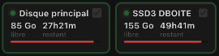

Field recorder MacCe que VAREC fait et que ton enregistreur ne fait pas.
Un flux d’écriture indépendant par disque. Pas une copie après coup : si un disque lâche, l’autre a déjà toute la prise.

VAREC détecte tout seul ton Tentacle en Bluetooth, ou le LTC. Le code horaire est inscrit dans chaque fichier.
Les en-têtes WAV sont mis à jour en continu. Coupure de courant ou plantage : ton fichier reste lisible.
Tes prises partent toutes seules sur Gofile, sans compte. Un lien par projet, repris dans le Sound Report.
Notes et débuts de prise exportés en marqueurs dans ton logiciel de montage. Ton monteur va t’adorer.
WAV 32F · RF64 · Sound Report PDF